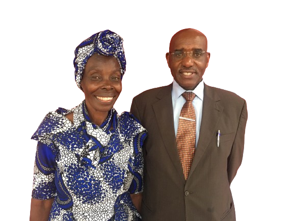

Welcome Home
Our Vision
To raise a righteous people/nation that will shine forth as the sun in the kingdom of the Father. — Matthew 13:43
Our Mission
To preach the living truth; the true living word of God.
Contact UsJoin Us
Our Programs
Sunday Services
1st Service: 8:30am – 9:30am
2nd Service: 9:30am – 10:30am
3rd Service: 10:30am – 1:00pm
Saturday Healing & Deliverance Service
10:30am – 12:30pm
Friday Prayers
4:00pm – 5:30pm
Wednesday Counselling & Prayer Session
10:00am – 5:00pm
Radio Vuna 102.0 FM Program
Every Saturday: 8:30pm – 9:00pm

What's Happening
Upcoming & Past Events
-

Prayer Warriors' Network Mission
A network of students from different polytechnics and colleges across the country being hosted by our church for a soul harvesting evangelism mission in conjunction with our church missioners.
16th to 22nd December 2024. -


Easter Convention
This year our annual Easter Convention will be taking place from the 28th to the 31st of March 2024. We will be having indoor sessions from 9:00am to 1:00pm in the church hall and outdoor sessions from 2:00pm to 7:00pm at the Nyansiongo Town Council gardens. The ministers for the event will be:
- Pst. Innocent Omoke from Kisii
- Pst. Richard Birir from Kericho
- Evangelist Nina Waryaro from Uganda
Listen & Grow
Radio Vuna Sermons
A growing archive of sermons aired on Radio Vuna 102.0 FM.
What is Good Friday? (Part 2)
Listening to Other Voices
In The Times of Ignorance
Partners


Senior Pastor's Desk
We recognize, appreciate and value your presence both on our website and church. Feel most welcome. It's our hope that you have been blessed by the content you've encountered on this page. It's our pleasure to welcome you once again to this site to remain updated with our calendar of events. You're also welcome to join us in one of our services outlined above. Be blessed.
Rev. Mr. & Mrs. Barnabas and Margaret Mititi

From the Senior Pastor
Why Must We Witness/Evangelize? — Part 7
So That We Don't Bear Their Blood
"Son of man, I have made you a watchman over the house of Israel; … give them warning from Me: When I say to the wicked, 'You shall surely die', & you don't warn them, nor speak to warn the wicked from his wicked way, to save his life, that same wicked man shall die in his iniquity; but his blood I will require at your hand." — Ezekiel 3:17–18
Some years ago an evangelist friend was going to see a patient at Kenyatta National Hospital. After dropping off at the hospital bus stop and heading to the hospital gate he heard a voice telling him to go back to the busy & crowded bus stop and witness to a young lady seated at the waiting shades. Though he pleaded with her for some time, she brushed him off, saying she was too young to need saving. The man walked off in shame as the crowd giggled at him. Less than ten minutes later he heard screams — the girl had slipped while rushing to board a bus, and her head was crushed. She died instantly. Had the brother refused to witness, her blood would have been required at his hands.
Therefore, make Jesus known within your jurisdiction: your relatives, neighbors, colleagues, workmates. In so doing we will not bear their blood when our Master returns. Sasa nikujituma wapendwa. Barikiweni.
Read More